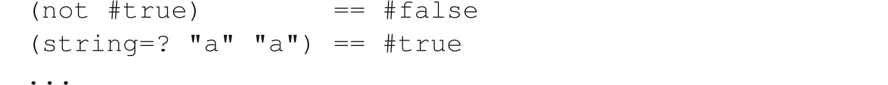
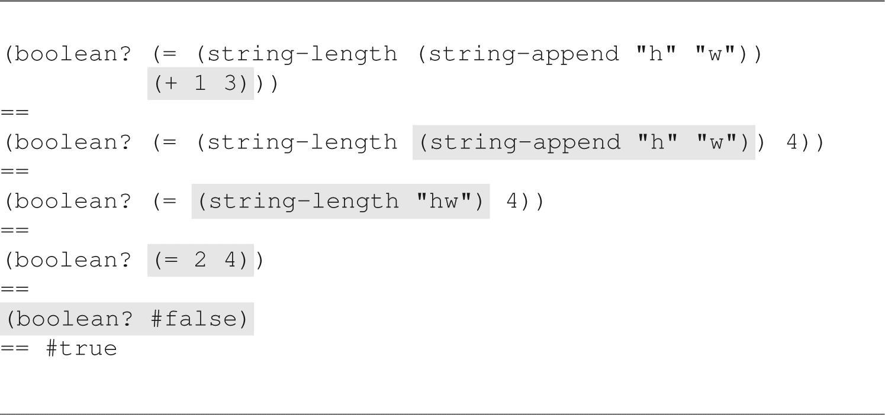
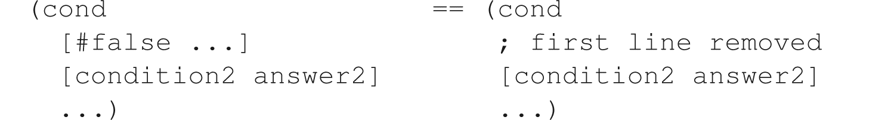
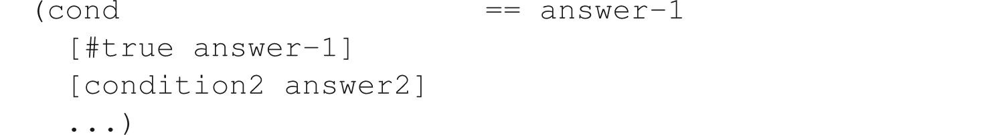

BSL Meaning
When you hit the return key on your keyboard and ask DrRacket to evaluate an expression, it uses the laws of arithmetic and algebra to obtain a value. For the variant of BSL treated so far, figure 39 defines grammatically what a value is—the set of values is just a subset of all expressions. The set includes Booleans, Strings, and Images.
The rules of evaluation come in two categories. An infinite number of rules, like those of arithmetic, explain how to determine the value of an application of a primitive operation to values:
(+ 1 1) == 2
(- 2 1) == 1
…
Remember == says that two expressions are equal according to the laws of computation in BSL. But BSL arithmetic is more general than just number crunching. It also includes rules for dealing with Boolean values, strings, and so on:

And, like in algebra, you can always replace equals with equals; see figure 42 for a sample calculation.

Figure 42: Replacing equals by equals
Second, we need a rule from algebra to understand the application of a function to arguments. Suppose the program contains the definition
(define (f x-1 … x-n)
f-body)
Then an application of a function is governed by the law:
(f v-1 … v-n) == f-body
; with all occurrences of x-1 … x-n
; replaced with v-1 … v-n, respectively
Due to the history of languages such as BSL, we refer to this rule as the beta or beta-value rule.
See chapter 17.2 for more on this rule.
This rule is formulated as generally as possible, so it is best to look at a concrete example. Say the definition is
(define (poly x y)
(+ (expt 2 x) y))
and DrRacket is given the expression (poly 3 5). Then the first step in an evaluation of the expression uses the beta rule:
(poly 3 5) == (+ (expt 2 3) 5) … == (+ 8 5) == 13
In addition to beta, we need rules that determine the value of cond expressions. These rules are algebraic even if they are not explicitly taught as part of the standard curriculum. When the first condition is #false, the first cond-line disappears, leaving the rest of the lines intact:

This rule has the name condfalse.Here is condtrue:

The rule also applies when the first condition is else.
Consider the following evaluation:
(cond
[(zero? 3) 1]
[(= 3 3) (+ 1 1)]
[else 3])
== ; by plain arithmetic and equals-for-equals
(cond
[#false 1]
[(= 3 3) (+ 1 1)]
[else 3])
== ; by rule condfalse
(cond
[(= 3 3) (+ 1 1)]
[else 3])
== ; by plain arithmetic and equals-for-equals
(cond
[#true (+ 1 1)]
[else 3])
== ; by rule condtrue
(+ 1 1)
The calculation illustrates the rules of plain arithmetic, the replacement of equals by equals, and both cond rules.
Exercise 121. Evaluate the following expressions step-by-step:
1. (+ (* (/ 12 8) 2/3)
(- 20 (sqrt 4)))
2. (cond
[(= 0 0) #false]
[(> 0 1) (string=? "a" "a")]
[else (= (/ 1 0) 9)])
3. (cond
[(= 2 0) #false]
[(> 2 1) (string=? "a" "a")]
[else (= (/ 1 2) 9)])
Use DrRacket’s stepper to confirm your computations. 
Exercise 122. Suppose the program contains these definitions:
(define (f x y)
(+ (* 3 x) (* y y)))
Show how DrRacket evaluates the following expressions, step-by-step:
1. (+ (f 1 2) (f 2 1))
2. (f 1 (* 2 3))
3. (f (f 1 (* 2 3)) 19)
Use DrRacket’s stepper to confirm your computations.